Comparison of Predictive and Machine Learning models for Loan Default prediction
1. Abstract
Accurate predictions of loan defaults is crucial for financial institutions to mitigate risks and make informed lending decisions. This paper presents a comprehensive analysis of consumer loan data, utilizing predictive and machine learning models to forecast probabilities of loan defaults.
This study was conducted using data from SuperLender, a digital lending company. With limited granular customer data, feature extraction and selection played a significant role in identifying the most predictive variables for model training.
Various machine learning techniques, including logistic regression, decision trees, random forest, gradient boost, and neural networks, were employed to analyze these variables and their impact on loan repayments. Ensemble models were also explored to examine improvements over standalone models. We also explored different Data partition ratios to assess their impact on model evaluation, selection, and accuracy.
Despite the data limitations, the ML models were able to achieve accuracies of over 80%, demonstrating their effectiveness in predicting consumer loan defaults. Key variables influencing loan defaults were identified, such as time taken to repay loans, delays in repaying loans and instances of past loan repayment failure.
This research contributes to financial risk management by providing a practical framework for implementing machine learning in loan prediction. It offers banks and financial institutions a more sophisticated toolset to manage credit risk effectively and make informed lending decisions.
2. Introduction
2.1 Background
Bank loans play a fundamental role in the financial system, enabling individuals and businesses to pursue their financial goals and driving economic growth (International Monetary Fund,2017). However, loans also pose a significant credit risk for financial institutions, making accurate loan default prediction crucial for mitigating risks, and making informed lending decisions.
Traditional loan approval processes rely heavily on manual underwriting, which is derived from credit scorecards and analysis on past credit history. However, this process can be subjective, prone to human error and impervious to future trends. This has led to a growing demand for more automated and accurate methods of loan prediction (Aslam et al., 2019). Machine learning (ML) has emerged as a promising approach to address this challenge, offering the ability to analyze large datasets and identify complex patterns that may not be readily apparent to human analysts (X. Zhu et al., 2023).
The emergence of digital lending platforms like SuperLender has exacerbated the need for more accurate modelling techniques, introducing new variables and credit history patterns into the risk assessment equation. This study is contextualized within this evolving landscape, proposing a shift towards more data-driven, machine learning-based approaches for predicting loan defaults.
2.2 Problem Statement
Despite the proliferation of data in the lending sector, there is a conspicuous absence of effective predictive models that can accurately forecast loan defaults. This gap not only impedes the risk management capabilities of financial institutions but also limits their ability to extend credit to viable borrowers.
While ML has shown considerable promise in loan prediction, there remains a gap between the potential of ML and its practical application in the financial industry. One of the key challenges is the limited availability of rich and granular customer data, which often restricts the effectiveness of ML models. Additionally, there is a need for more research on the optimal combination of ML techniques and the development of robust models that can generalize well to new types of data.
2.3 Project Objectives
This study aims to bridge the gap between traditional loan prediction methods and the potential of ML by developing and evaluating ML models for predicting consumer loan defaults.
The specific objectives of this study are:
To identify the key factors that could influence consumer loan defaults.
To develop and evaluate various ML models for predicting consumer loan defaults.
To compare the performance of different ML models and identify the most effective model for predicting loan defaults.
3. Literature Review
Loan default prediction, a crucial task for financial institutions, involves forecasting the likelihood of borrowers defaulting on loans. This process is vital in mitigating credit risk and maintaining financial stability.
A systematic review by Calli and Çoşkun (2021) encompassing 108 studies on credit risk assessment and credit default predictors, reveals a myriad of significant factors in predicting loan default. Socioeconomic elements such as home ownership, number of dependents, household size, employment status, income, and education were identified as critical predictors of default risk. Additionally, demographic factors like age, gender, and marital status, along with psychological and behavioral attributes such as risk-taking behavior, impulsiveness, and financial literacy, have been linked to default probability.
The industry-standard Fair Isaac Corp score (FICO) further illustrates this complexity. It evaluates creditworthiness based on amounts owed, payment history, new credit, length of credit history, and credit mix (myFICO, 2022). This underscores the need for a multifaceted approach in credit risk evaluation and integrating a diverse set of variables into predictive models.
Beyond identifying influential variables, the research landscape also points to the need for effective predictive models that can accurately interpret customer loan data nuances. Wu, W.J. (2022) applied Random Forest and XGBoost models to a dataset of 105,471 loan records, achieving commendable average accuracy scores of around 0.9. In a separate study, X. Zhu et al. (2023) conducted a comparative analysis with four models (Logistic Regression, Decision Tree, XGBoost, and LightGBM) on a dataset with 800,000 loan records and concluded that XGBoost and LightGBM models surpassed Logistic Regression and Decision Tree models, with accuracy scores exceeding 0.8 compared to the latter’s 0.6. Lastly, Odegua (2020), using the same customer loan dataset from SuperLender, reported substantial results from an XGBoost model, with an accuracy score of 0.79 and an F1 score of 0.87.
In addition to individual predictive models, ensemble methods have also been shown to achieve promising results in loan default prediction. Ensemble methods combine the predictions of multiple individual models to produce a more robust and accurate prediction. This approach is based on the premise that a diverse set of models is more likely to capture the underlying complexities of the data and produce more accurate predictions than individual models.
Ma and Wu (2023) proposed a two-layer model based on a Stacking ensemble learning algorithm for a personal loan dataset in Alibaba’s Tianchi platform, using LightGBM, Adaboost, XGBoost and Gradient boosting as primary classifiers and random forest as the secondary classifier. Results from their study concluded that their Stacking ensemble learning model outperformed the four individual models in five evaluation metrics: accuracy, precision, recall, F1 score, and AUC, with a prediction accuracy of 82.03% for the test set.
In addition to selecting appropriate predictive models, the methodology of dividing data into training and testing sets is critical for developing a robust predictive system. The training set is used to build the model, encapsulating the intricate relationships between the variables, while the testing set serves to evaluate its predictive power on unseen data. A study by Gholamy & Kreinovich (2018) suggested that an optimal balance is typically achieved with a 70/30 or 80/20 split between training and testing sets. This division not only allows the model to learn from a substantial portion of the data but also retains a significant subset for validation, thus enhancing the model’s ability to generalize beyond the data on which it was trained. This consideration of data partitioning is instrumental in avoiding overfitting, where a model performs well on training data but fails to predict accurately on new data, which is a common pitfall in machine learning applications.
4. Methodology
4.1 Predictive Modelling Process
The Predictive Modelling process in this study involved Data exploration and preparation, Variable creation and selection, Data Sampling, Model fitting and evaluation and Final model selection. All of these were performed using SAS Viya, alongside various SAS modules as depicted in Figure 1. Several iterations in terms of variable selection and data sampling and partitioning ratios were also explored, to observe any improvements in the performance of the models.
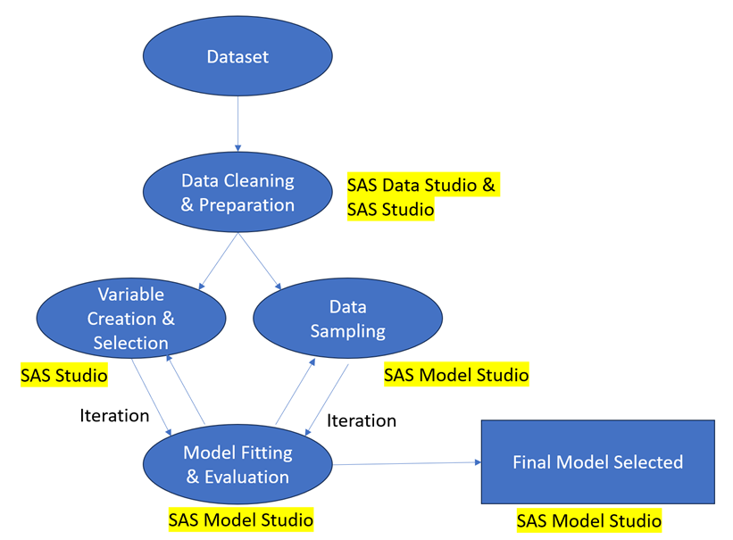
4.2 Data Set
The dataset used in this study was obtained from the Loan Default Prediction Challenge Early (Zindi, 2023).
There are three sets of data:
Demographics: This contains description and details about loan applicants. Attributes such as birth dates, education level, employment type and account types can be found here.
Performance: This contains details of the latest loan applied by each applicant and a rating (good-bad-flag) which describes if an applicant is a good or bad debtor.
Previous Loans: This contains information on the previous loans disbursed, as well as the history of repayment.
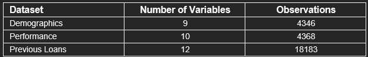
We observed that the variables provided in the Demographics dataset: ‘birthdate’, ‘bank account type’, ‘longitude’, ‘latitude’, ‘bank name’, ‘bank branch’, ‘employment status’ and ‘education’ were somewhat generic with sizeable missing values.
On the other hand, the previous loans dataset was extensively populated with previous loan applications as well as the history of payments. This lack of granularity in demographic variables led us to examine in more detail the relationships between past loan applications and payment histories to loan default probabilities.
4.3 Data Cleaning & Preparation
The Demographics and Performance datasets were grouped by Customer Identifiers while Previous loans were grouped by Loan Identifiers. Upon examining the datasets, we noted that there were 1099 customers which could not be found in the Demographics dataset.
We first merged the Performance and Demographics datasets to ensure that we only include unique customers found in both datasets. This enabled us to draw from existing variables present in both the Demographics and Loan performance datasets for our prediction models. This merged dataset derived 3269 unique customers.
We then merged this with the Previous Loans dataset, upon first completing a Group-by Customer Identifier operation. This operation enabled us to change the structure of the Previous loans dataset to be aligned with the other two datasets. After identifying and removing duplicates, our final merged dataset consisted of 3264 unique customers with variables drawn from all three original datasets. As highlighted in Figure 1, the process of deriving the final dataset went through several iterations, as we identified and experimented on various predictive variables.
4.4 Variable creation and selection
Additionally, we also created new predictor variables, in line with the influential factors that we identified and mentioned in our literature review.
The following summarizes the Variable creation and selection/filtering process:
Bank Branch was dropped as there were more than 80% missing values.
Latitude and Longitude variables were dropped as only 25 customers were found to be residing outside of Africa.
Education level: 86.4% of this data is missing. However, since education was identified to be an influential factor in predicting loan defaults, we recoded this variable to ‘High Education’, ‘Low Education’ and ‘No Education’ classes.
Employment: Since there were 648 records missing, we recoded this variable into ‘Permanent’ and ‘Not Permanent’ classes.
Referred by: We recoded this to ‘Yes’ and ‘No’ classes.
Created new ‘Recency’ variables to measure the relationship of time between loans, difference in time between the last loan in the previous loan’s dataset and the newest loan in the performance dataset.
Created new ‘Frequency’ variables to measure the number of loans, the minimum, maximum, average of number of loans.
Created new ‘Monetary’ variables to measure loan amounts, minimum, maximum, average and variations between previous loan amounts across the credit history period.
Created new ‘Comparison’ variables to compare a customer’s previous loan behaviour against the newest loan in performance dataset. Comparisons were also made in terms of differences in amount, term days, interest costs, interests and time or gap in between loans.
In total, 57 new predictive variables were created or recoded from data drawn from the original datasets.
4.5 Data Partitioning
Our consolidated final dataset was split into Training, Validation, and Test partitions in 4 combinations like below:
50:30:20
60:20:20
60:30:10
40:30:30
This is in line with the research mentioned in our literature review where Test partitions of 20% and 30% were observed to produce better results over other ratios. Furthermore, we wanted to observe if the choice of partition ratios could influence model selection.
4.6 Model Fitting and Evaluation
The following predictive models were applied to our training dataset upon selecting the Auto-tuning template in SAS Model Studio (Figure 2):
Neural network
Stepwise Logistic regression
Forward Logistic regression
Gradient Boosting
Forest
Decision Tree
Ensemble
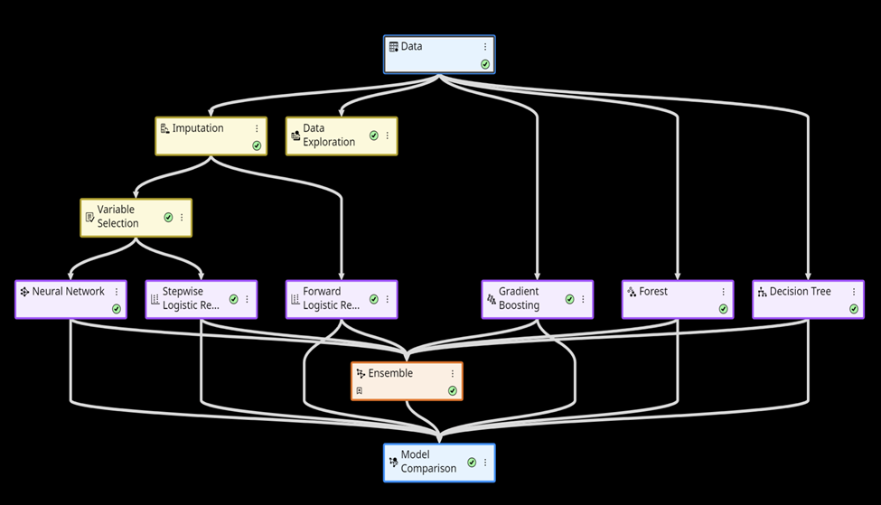
As part of our model building process, for models that are sensitive to highly correlated variables (Log regression and Neural networks), SAS Model Studio first analyses our predictive variables and rejects similar variables of high variance through the Variable Selection process. This represents an improvement over manual checks of collinearity as SAS Model Studio can analyze paired and grouped variances at the same time.
4.7 Analysis and Results
The F-1 score metric is used to evaluate models’ accuracy in predicting loan defaults probability.
In SAS Model Studio, we ran four separate model projects based on an auto-tuning template with default settings on 4 different Train-Validate-Test partition ratios.
Our champion model was the Ensemble model with a partition ratio of 60:30:10 (Table 2) and an F-1 score of 0.8972 on test data.
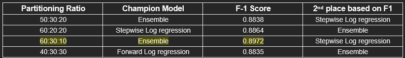
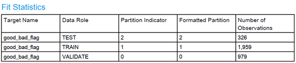
We further break down and compare the F1 and Accuracy scores of other models in the same project as our Champion model to examine the relative differences (Figure 4)
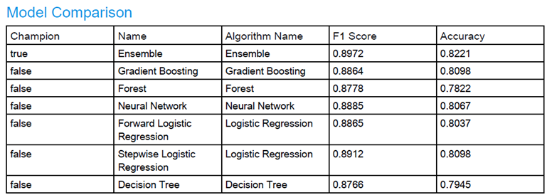
The Ensemble model, which combines multiple algorithms, obtained the highest F1 score of 0.8972 and an Accuracy score of 82.21% (Figure 4). This superior performance underscores the ensemble’s robustness, likely due to its ability to integrate diverse predictive signals.
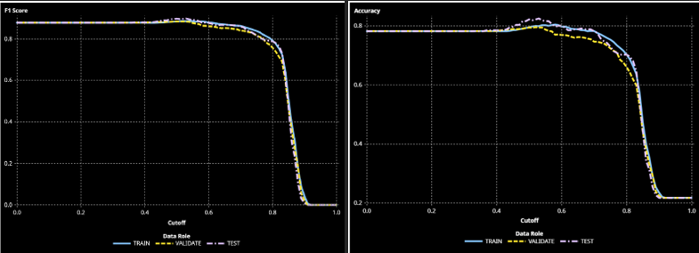
F1 score combines the measures of precision and recall (or sensitivity), which are measures of classification based on the confusion matrix that are calculated at various cutoff values. It is calculated as 2*Precision*Recall / (Precision + Recall), which is the harmonic mean of Precision and Recall. A larger F1 score indicates a more accurate model.
Accuracy is the proportion of observations that are correctly classified as either an event or non-event, calculated at various cutoff values. It is calculated as (true positives + true negatives) / (total observations).
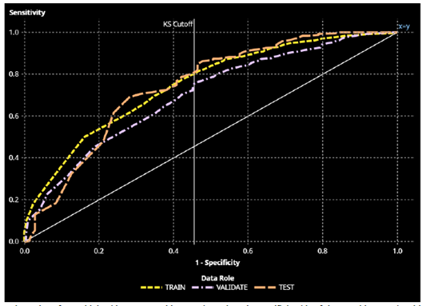
The Receiver Operating Characteristic (ROC) curve is a plot of sensitivity (the true positive rate) against 1-specificity (the false positive rate), which are both measures of classification based on the confusion matrix. From Figure 6, we can observe that our Ensemble model is able to achieve a high Area under the Curve (AUC) for all our partitions Train (0.7501), Validate (0.6999) and Test (0.7423). (See Appendix for Fit statistics).
The diagonal line indicates a random model, where sensitivity = 1-specificity. An ROC curve that plots above this diagonal indicates a better-than-random ability to distinguish between the positive and negative classes.
5. Discussion
Notably, our tree-based models, including Random Forest, Gradient Boosting, and Decision Trees, exhibit a somewhat subdued performance compared to Logistic regression models. This divergence in efficacy may be attributed to the logistic regression models’ ability for handling interval variables, which are predominant in our dataset.
Moreover, the consistency across both the F1 score and accuracy for logistic regression models indicates a stable predictive capacity. In contrast, the tree-based models, while still a robust contender, fall behind, likely due to their inherent complexity and potential for overfitting, which is less of a concern with logistic regression.
This assessment leads us to conclude that, for this specific dataset, Logistic regression models may provide a competitive edge. However, the ensemble model’s superior performance remains a testament to the power of combining algorithmic strengths to achieve a more accurate prediction model.
The Event Classification report (Figure 7) enables us to examine the model’s ability to correctly predict events. It is a visual representation of the confusion matrix at various cutoff values for each partition. The classification cutoffs used in the plot are the default (0.5) and KS cutoff values for existing partitions: 0.79 (TRAIN), 0.77 (VALIDATE), 0.81 (TEST).
It is noticeable that at the Default cut off 0.5, the model is unable to attain a high level to correctly predict True Negatives (correct predictions of ‘Bad’ events) across all partitions. However, it is able to maintain a high level to correctly predict True Positives (correct predictions of ‘Good’ events). This is likely due to an imbalance of the dataset where there are more ‘Good’ and non-defaulting clients present. This is further substantiated by the presence of 261 records of ‘Bad’ flags out of the total 3264 unique customers in our dataset.
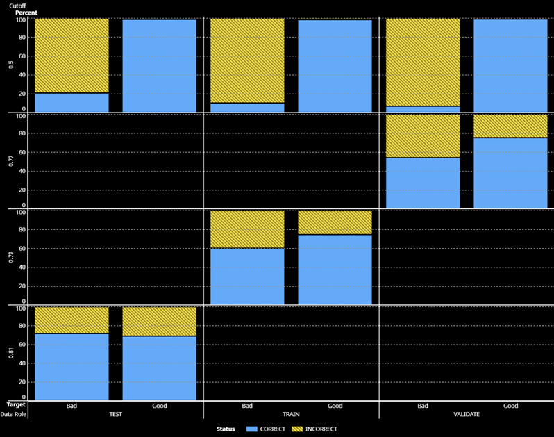
Nonetheless, relaxing the cut-off levels to higher cutoff levels enables our model to increase its ability to capture ‘Bad’ events. As can be seen in Figure 8, our model is able to increase True Negatives from 21.12% to 71.83% when the cut off is raised to 0.81.
However, this comes with a tradeoff where True Positives were reduced from 99.21% to 69.01%. In a loan lending sense, this is akin to reducing one’s revenue, in order to reduce costs from loan defaults. This tradeoff would make sense for banks or financial institutions which consider the costs from loan defaults to be more damaging to their bottom line than the revenue loss from disbursing lesser loans.
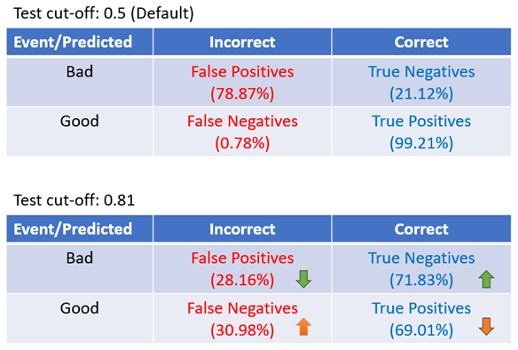
In terms of model interpretability, SAS Model studio is able to rank the variables that are important to our model through the variable importance function (figure 9).
From Table 3, we observed that our top 10 important variables can be grouped in terms of time taken to repay loans, delays in repaying loans and instances of past loan repayment failure. This fits well with the factors we identified and mentioned in our literature review, where factors related to Debt servicing seem to provide more effective feedback on an applicant’s creditworthiness.
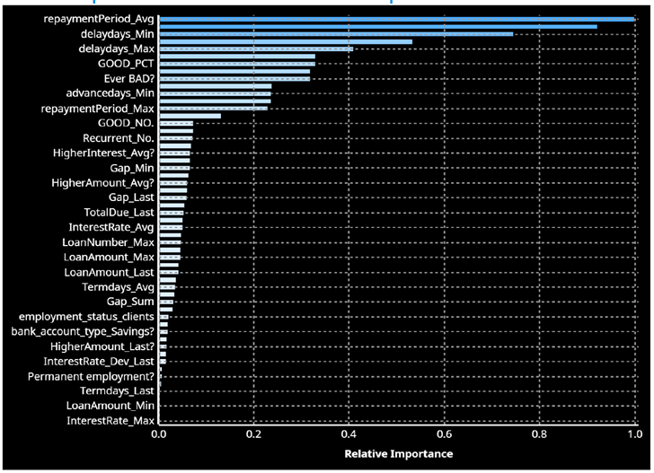
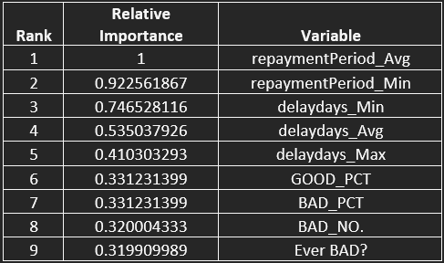
6. Conclusion
Through meticulous analysis, we established that ensemble models, which synthesize the insights of multiple algorithms, are likely able to deliver higher F-1 and Accuracy scores over standalone models.
However, it is also important to understand the nature of the dataset. As mentioned, the lack of granular demographics data on loan applicants steered us to examine in more detail the relationships between past loan applications and payments behaviour to loan default probabilities. This may have likely led to the creation of more interval instead of categorical variables, which may have inadvertently favored logistic regression models over tree-based models.
Our study also points to a delicate balance in credit risk management. As observed, the adoption of a higher threshold for classifying loan defaults can significantly mitigate the risk of default by enhancing the true negative rate. However, this comes at the cost of potential revenue loss by identifying fewer good loan opportunities. This finding is particularly important for financial institutions for whom the cost of defaults can potentially overshadow the revenue from new loans.
Moreover, our findings underscore the importance of variable selection in developing predictive models. By refining the variables through iterative analysis, we identified key predictors of default that look beyond traditional financial metrics, suggesting that future models could benefit from incorporating a broader spectrum of behavioral and economic indicators. Significantly, important variables on demographics and situational factors could exert a stronger influence on loan default probabilities compared to historical repayment data.
Future research could investigate the scalability of our proposed models across different financial products and diverse economic contexts. For example, would the same approach and models work across other credit products and for other geographies?
The integration of machine learning models in risk management presents an opportunity for banks to not only fortify their defenses against loan defaults but also to enhance their overall operational efficiency. However, as with other predictive models, it is also important that this does not become a one-size-fits-all solution and approach. Machine learning models need to be tailored to the specific needs of each financial institution and market.
There is also a continuous need to collect new data and phase out obsolete ones to train the models. The use of meaningful and quality variables that make sense from both a business and behavioral sense could also enhance predictive capabilities and improve model performance.
References
Banks: at the heart of the matter. (2017, June 15). IMF. https://www.imf.org/en/Publications/fandd/issues/Series/Back-to-Basics/Banks#:~:text=Making%20loans%20While%20at%20any,term%20assets%20%28loans
Aslam, U., Aziz, H. I. T., Sohail, A., & Batcha, N. K. (2019). An Empirical study on loan default prediction models. Journal of Computational and Theoretical Nanoscience, 16(8), 3483–3488. https://doi.org/10.1166/jctn.2019.8312
Çallı, B. A., & Çoşkun, E. (2021). A longitudinal systematic review of credit risk assessment and credit default predictors. SAGE Open, 11(4), 215824402110613. https://doi.org/10.1177/21582440211061333
Loan Default Risk Prediction using Knowledge Graph. (2022, January 26). IEEE Conference Publication | IEEE Xplore. https://ieeexplore.ieee.org/abstract/document/9729073
Bhatore, S., Mohan, S., & Reddy, Y. R. (2020). Machine learning techniques for credit risk evaluation: a systematic literature review. Journal of Banking and Financial Technology, 4(1), 111–138. https://doi.org/10.1007/s42786-020-00020-3
Zhu, X., Chu, Q., Song, X., Hu, P., & Peng, L. (2023). Explainable prediction of loan default based on machine learning models. Data Science and Management, 6(3), 123–133. https://doi.org/10.1016/j.dsm.2023.04.003
Odegua, R. (2020). Predicting Bank Loan Default with Extreme Gradient Boosting. ResearchGate. https://www.researchgate.net/publication/339088951_Predicting_Bank_Loan_Default_with_Extreme_Gradient_Boosting
Gholamy, A. (n.d.). Why 70/30 or 80/20 relation between training and testing sets: A pedagogical explanation. ScholarWorks@UTEP. https://scholarworks.utep.edu/cs_techrep/1209/
myFICO. (2022, February 23). What’s in my FICO® Scores? myFICO. https://www.myfico.com/credit-education/whats-in-your-credit-score#:~:text=What’s%20in%20my%20FICO%C2%AE,and%20credit%20mix%20(10%25.
Ma, Z., & Wu, Q. (2023). Research on the prediction method for personal loan default based on Two-Layer Stacking Ensemble Learning model. In Atlantis Highlights in Computer Sciences (pp. 1099–1110). https://doi.org/10.2991/978-94-6463-198-2_113
Appendix
Fit statistics for the Champion mode- - Ensemble
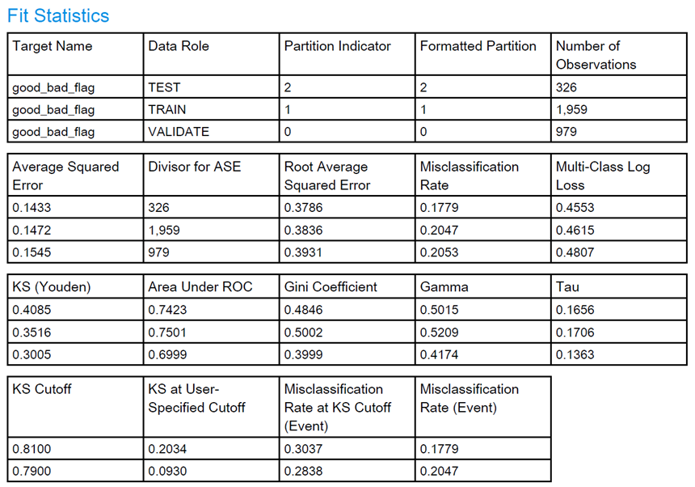
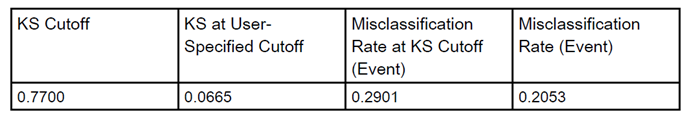
Important Note:
SAS and all other SAS Institute Inc. product or service names are registered trademarks or trademarks of SAS Institute Inc. in the USA and other countries. ® indicates USA registration.
Other brand and product names are trademarks of their respective companies.